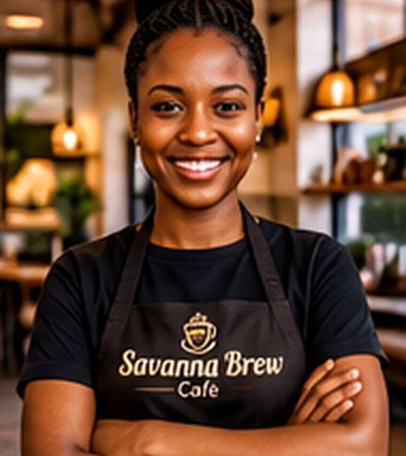

Since2019
MEET THE FOUNDER
From the highlands to the heart of Westlands
Savanna Brew Café opened in 2019 with one small espresso machine and a big dream: to celebrate Kenyan coffee. Founder Amina Otieno grew up on her grandparents' coffee farm in Nyeri and wanted to bring that flavour to the city. Today the café supports local farmers, uses eco-friendly packaging and hosts community events every month.
Every cup is a little reminder of the farms, families and hands behind Kenya's beautiful coffee.
WHAT MATTERS TO US
Our values
We believe a good café should be good for its customers, its community and the environment.
- 01
Quality
Only freshly roasted, single-origin Kenyan beans.
- 02
Community
Fair prices for farmers and a welcoming space for all.
- 03
Sustainability
Compostable cups and zero-waste pastries.
“Coffee brings people together. I wanted to create a place where everyone feels at home, while celebrating the wonderful farmers who make every cup possible.” — Amina Otieno, Founder